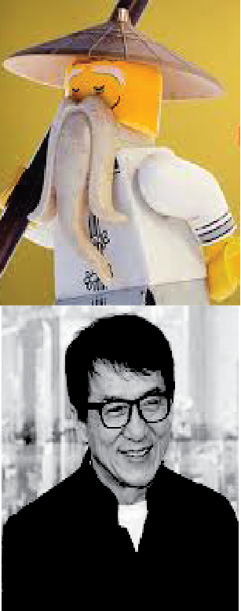
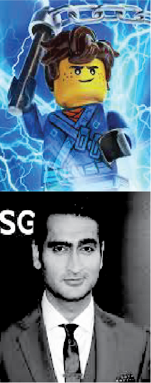
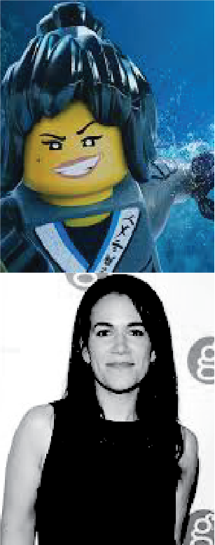
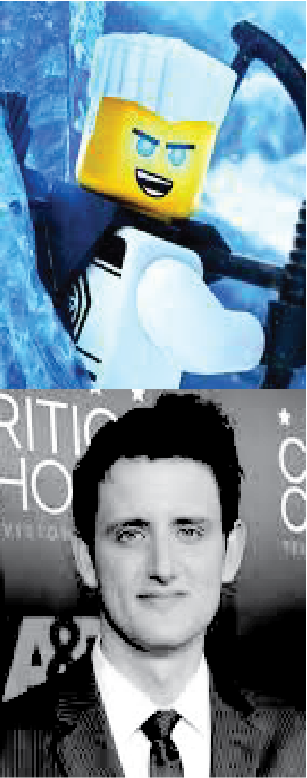
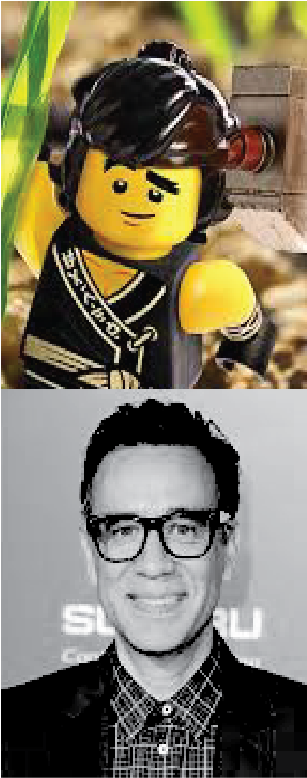

Dave Franco, Justin Theroux, Fred Armisen, Abbi Jacobson, Olivia Munn, Kumail Nanjiani, Michael Peña, Zach Woods, Jackie Chan, David Burrows, Alex Kauffman, Ali Wong, Garret Elkins, Todd Hansen





CLIPS
SCRIPT
THE LEGEND OF NINJAGO
complete transcript
[OPENING SCENE - CURIO SHOP](A boy enters a Curio Shop.) KID 1: (mockingly) See you later!KID 2: Come on, guys, leave him alone. (The boy looks around the shop, which is full of many interesting items.) JAKE: Hello? (Jake explores, playing among the shelves. He knocks a suit of armour, causing a flagpole to fall and launch a tray of teacups into the air. Mr. Liu catches them all expertly.) MR. LIU: (sternly) Boy... (Mr. Liu kicks the flagpole back and places the cups back on the tray.) JAKE: Wow... That was amazing. MR. LIU: Why don't you play outside with your friends?JAKE: I don't know. (Children are heard laughing outside.) MR. LIU: Come here. You don't know, Huh?JAKE: Sometimes they make fun of me.MR. LIU: Hmm. (The boy points at a snake in a jar.) JAKE: Is that real?MR. LIU: Yes, it's real. Everything here is real.JAKE: Whoa. Is that real? (Jake points at a sleeping cat. Mr. Liu shows off the scratches on his hand.) MR. LIU: That cat is real. Real monster. (The cat growls, and Mr Liu hisses back. He points to the toy in the boy's hand.) MR. LIU: What's that?JAKE: This? This is Lloyd. (Mr. Liu examines the figure closely. It is very scratched up and is missing an arm.) MR. LIU: Hmm. He looks like a very brave fighter.JAKE: No, he's just a kid. He can't do anything. (Mr. Liu puts the figure in a cloth and pulls it out to reveal it in perfect condition, wearing a gi.) MR. LIU: He might look different... but he can do great things.JAKE: Whoa...MR. LIU: You just have to look at it from a different point of view. (Mr Liu puts out a box and blows the dust off of it, causing Jake to cough.) MR. LIU: Ah, duì bù qǐ. (sorry) (Mr. Liu opens the box to reveal a wooden figure of Wu.) JAKE: Whoa...MR. LIU: This is his teacher. Very old. Very wise. And very handsome. (Jake laughs.) MR. LIU: Have you ever heard the legend behind the legend of Ninjago?JAKE: No.MR. LIU: I would tell you, but to truly see you must forget everything, you know... and see things in a new way. The story of Ninjago... is the story of a boy. His name is Lloyd, and his dad is the worst guy in the history of the world. [TRANSITION TO LEGO WORLD - GOOD MORNING NINJAGO] (Transition into the Lego world, showing the port with many fishermen.) VOICE-OVER 1: Today on Good Morning, Ninjago.BOATER 1: Buenos dias, Ninjago!BOATER 2: Ohayō, Ninjago!BOATER 3: G'day, Ninjago!BOATER 4: Guten morgen, Ninjago!BOATER 5: Bonjour, Ninjago!VOICE-OVER 1: When Garmadon attacks... we are there! When Garmadon crashes the stock market... we're there again! When Garmadon defaces Whistler's mother... we're still there! We are the only news team watching Garmadon's volcanic lair 24 hours a day. This is... (Scene changes to a news room.) ROBIN ROBERTS: Good Morning Ninjago! I'm Robin Roberts.MICHAEL STRAHAN: And I'm Michael Strahan, and I am pumped to be bringing you the news!VOICE-OVER 2: PUMPED!MICHAEL: Woo!ROBIN: Well, looks like everyone is on pins and needles waiting for Garmadon's next attack.VOICE-OVER 2: ATTACK FORECAST!MICHAEL: Our experts predict a 95% chance of a Garmadon attack today.ROBIN: Yikes! Ninjago, you better stay inside.MICHAEL: You better stay right there! Don't you dare come out! At least until our Secret Ninja Force steps in.ROBIN: Thank goodness for those ninjas.MICHAEL: But who are these secret ninjas, Robin?ROBIN: We have so many questions. VOICE-OVER 2: BURNING QUESTIONS! VOICE-OVER 1: Fire Ninja. Where is he on a scale of one to awesome?KAI: I'm not gonna lie. Um... AWESOME! VOICE-OVER 1: Earth Ninja. When will he upgrade to digital?COLE: No, I would never do that. VOICE-OVER 1: Ice Ninja. Is he a real boy, or a robot?ZANE: How dare you? I'm a wild teen. VOICE-OVER 1: Lightning Ninja. Is he the bravest ninja of them all?JAY: (screaming) VOICE-OVER 1: I'll take that as a yes. Water Ninja. She's a girl and a ninja. Can she really have it all?NYA: You fellas need to inform yourselves... of where we're at culturally. VOICE-OVER 1: And finally the Green Ninja. He fights in the air, on the ground and in the kitchen, with a refrigerator. But what is he hiding, and who is he really? VOICE-OVER 2: LOCAL BIRTHDAYS! ROBIN: Celebrating birthdays today are this hot dog guy, this panda and... uh oh. Lloyd Garmadon!MICHAEL: The son of the evil Lord Garmadon.ROBIN: Must be tough to be that kid. [LLOYD'S APARTMENT - BIRTHDAY MORNING] (Scene changes to Lloyd's home, part of a huge apartment block.) LLOYD'S PHONE: ♪Jump up, kick back, whip around and spin! And then we jump back, do it again! Ninja! GO! Ninja! G-♪ LLOYD: Hello? (Garmadon is in his pyjamas, eating cereal.) GARMADON: Hello? What do you want?LLOYD: Uh... you called me.GARMADON: Hang on a second. Let me- Hm. Must've butt-dialled you. Who is this?LLOYD: (sighs) It's Lloyd. Lloyd Garmadon, your son?GARMADON: No. my son is totally bald and has no teeth.LLOYD: Yeah, well, surprise. I'm not a baby anymore.GARMADON: Duly noted. How old are you? You're seven, right, you're seven?LLOYD: Sixteen.GARMADON: Huh.LLOYD: (under his breath) Just add nine to that...GARMADON: Well, good talk son.LLOYD: Wait, are you sure there, there isn't a special reason why you might've called me today, on this day, specifically, todaaaaay?GARMADON: Look, I didn't call you, my butt called you.LLOYD: ...Oh.GARMADON: Well, no time to chat. Sorry, Dad has gotta go to work. I've got to get that Green Ninja.LLOYD: Yeah.GARMADON: Glad the teeth finally came in. Buh-bye! (Garmadon hangs up on Lloyd. Cut to later in the morning, when Lloyd is washing dishes.) KOKO: Lloooyd! Good mooorniiiing!LLOYD: Mom, hey. Um, here's a thought. What if I... didn't... go to school today?KOKO: What? Oh, no, you don't want to miss school, honey. These are the best years of your life!LLOYD: Um, have you, have you been... to high school? 'Cus uh. It's judgy. Pretty judgy.KOKO: Oh, honey. You just need to give them a chance to see the real you.LLOYD: Yeah. I don't think I can actually show people the real... me.KOKO: That's not true. All you've got to do is to show them the person you are on the inside. (Koko touches Lloyd's heart.) KOKO: Right here, where it matters most. Oh! And also, don't forget: if your dad attacks the city again today, just be sure to-BOTH: Duck and cover until the secret ninjas give the all-clear.KOKO: Oh, and also don't forget...LLOYD: Yeah?KOKO: Have a happy birthday, honey. (Koko kisses Lloyd's cheek.) LLOYD: Thanks mom. I'll try my best.KOKO: Of course you will! [THE BUS STOP - SCHOOL] (Lloyd starts his journey to school. Operation New Me by Jingle Punks plays. Lloyd approaches a group of kids at the bus stop.) LLOYD: Hello! (The other kids look uncomfortable and start typing on their phones. "🚨 LLOYD ALERT 🚨", "AGAIN? when 🚌 !!", "😡😡😡😡😡", "his dad has scary eyes 👀", "CAN'T 👏 HE 👏 GET 👏 A 👏 RIDE", "like father like son", "WORST 🚌🛑", 🚫 LLOYD 🚫", "👎", "👎", "👎", "new phone... who dis?". Lloyd gets on the School Bus. As soon as he steps on, the other kids stop messing around and sit, scowling at him. Lloyd walks timidly up the aisle.) LLOYD: Hey... (Lloyd takes a window seat on the right side of the bus. The other kids immediately all move onto the left.) LLOYD: Cool... (Lloyd looks out the window, smiling, but his face quickly falls into a sad expression. The left side of the bus scrapes along the road as it drives off. When they arrive at school, the bus driver slams the doors behind Lloyd the second he steps off. The school goes silent as the students stare at Lloyd. They start to whisper to each other as he walks past them.) GIRL: That's the kid I was telling you about. His dad ruins everything. (Zane suddenly appears beside Lloyd.) ZANE: Hello, fellow teenager.LLOYD: Zane, hey.ZANE: Man, my mom is on my case all the time. She's all, "(dial-up sounds)", and I'm like, "Lay off, mom. I'm just a teenager."LLOYD: I hear that. (They walk through the main entrance as the bell rings. Kai shouts from across the corridor.) KAI: BRO! Dude, give me a hug, man. Give me a birthday hug! (Kai hugs Lloyd very tight.) LLOYD: That's a good one.ZANE: Birthday hug? Let me get in on that.LLOYD: (panicked) Zane-ZANE: I'll increase the pressure dramatically.LLOYD: Zane! Zane- Zane! (Lloyd gets crushed. Nya skids round the corner on her motorbike.) NYA: Oh-ho-ho, Lloyd!LLOYD: Nya.NYA: Yo bro.KAI: What's up, sis?NYA: Oh, hey, actual bro.JAY: Hey, Nya! Where'd you get that bike? At the... great stuff store? Uh. (Cole rolls his eyes at Jay.) NYA: Guys. Check out my new paint job. 'Cus I did it myself! The Lady Iron... Dragon. My hero! CHAD: Hey everyone, look. It's Garma-dork and the dork squad. You want to hear our new cheer?CHEERLEADERS: ♪L-L-O-Y-D! His dad is bad and so is he! Boo Lloyd! Boo Lloyd!♪CHAD: BOO LLOYD!LLOYD: (sarcastically) Great chant! I'll bet you got a number one hit on your hands! [THE BEACH - GARMADON ATTACKS] (Scene cuts to the beach.) RADIO: And straight in at number one with a bullet, it's "Boo Lloyd"! ♪L-L-O-Y-D! His dad is bad and so is he! Boo Lloyd! Boo Lloyd! Boooooooooo!♪ (As the song plays, the beach-goers start to notice something coming out of the water and advancing on the city. The whole city looks on in fear as Garmadon's forces start to fly overhead.) GARMADON: Citizens of Ninjago! Get ready to welcome your new overlord! Who goes by the name of...?CITIZEN 1: Garmadon!GARMADON: What's my name?CITIZEN 2: Garmadon!GARMADON: Say it again?CITIZEN 2: Garmadon!GARMADON: I can't hear you!CITIZEN 3: Garmadon!BABY: Garmadon!GARMADON: Don't wear it out. Okay. General number six!GENERAL #6: Yes, sir!GARMADON: You and your team of crab men overthrow the police station.GENERAL #6: I can do that!GARMADON: General number one! Take the TV station!GENERAL #1: 10-4!MICHAEL: What?!GARMADON: General number five! Crash the stock market!GENERAL #5: Okie-do!GARMADON: General number three, knock over that table. General number two! Pop that kid's balloon. General number four! Make the school bus dangle precariously over an overpass or something. I've never seen that before. (The road is blocked and the bus skids, and stops with its back half hanging over a large drop.) GARMADON: Now all I have to do is climb to the top of Ninjago Tower, and then I will rule over Ninjago.MAYOR: Wait, What?!GARMADON: I said: "I will rule over Ninjago." Forever! (laughs maniacally)BUS KID: Where are the ninjas? [INSIDE THE CLASSROOM - NINJA TRANSFORMATION] (Cut to inside a classroom. Cole is listening to music on his headphones and humming. Kai is asleep in the back. The class suddenly notices the action outside.) MS. LAUDITA: Uh oh! It's Garmadon!STUDENTS: Thanks, Lloyd.MS. LAUDITA: You know what to do! Duck and cover!NINJA: Can I have a bathroom pass?MS. LAUDITA: I think you mean: "May I". "May I have a bathroom pass?" You know, do whatever you want. (The Ninja race down the corridor towards their lockers.) KAI: Come on, come on!NINJA: Ninjaaaa GO! (They step into their lockers, which take them from the school to the Ninja Mech Garage. They change into their gi on the way.) COMPUTER: Ninja Computer System initiated.NYA: Come on!KAI: Alright! Let's go!LLOYD: Ninja team! Shout out your call sign. Ha ha! Kai, light it up!KAI: Fire Mech! So ninja.COMPUTER: Fire Mech ignited.KAI: Alright, take it away, sis!NYA: Water Mech! Ready and standing by. Zane!KAI: Come on!LLOYD: Your turn, buddy!ZANE: Ice Mech! Loading, loading, loading, loading.LLOYD: Ready, Jay?JAY: Yeah, yeah, I got this. Lightning Mech, ready! Wait, no, not ready. Ready!NYA: Cole, do you want to get Garmadon's butt?COLE: Earth Mech!COMPUTER: Turntables at thirty three and a third RPM.COLE: Ready and standing by.LLOYD: Green Ninja! Ready and standing by. All ninjas! Hit it! (The mechs all start up and pull out of the garage.) LLOYD: Alright, ninjas, follow me!JAY: As long as we have these mechs, we're unstoppable!ZANE: If we were The Beatles, you would be John, you would be Paul, you would be George, and I would be their computer! (As the ninja arrive to fend off the Shark Army, the citizens of Ninjago start to cheer. Lloyd looks down, smiling and waving.) CITIZEN 4: We love you Green Ninja! LLOYD: Jay, you take the air.JAY: 10-4, good buddy!LLOYD: Nya, water.NYA: It's a dangerous and fascinating environment.LLOYD: I know, right? Kai, Zane and Cole? You guys take downtown!KAI: Already here, dude! We're taking some heavy fire!COLE: Hold on, Kai. I got you covered. You heard my latest track? It's a SMASH!KAI: Thanks, Cole!LLOYD: Jay, you've got bogies on your six!COMPUTER: You've also got them on your three, one, seven, five, six, eight, nine and two.JAY: Aaargh!SOLDIER: I've got good [?) Fire! Too close for missiles! Switching to crabs!JAY: Aaaaaaargh!SOLDIER: Get your affairs in order, Lightning Ninja!JAY: Aaargh! I've gotta charge up my super-sonic dynamo! Come on, charge! Charge! Hurry up, charge charge charge charge charge charge! Clear! (Heroes by Blaze n Vill plays as the ninja destroy more and more of Garmadon's forces.) KAI: Zane! You are the man!ZANE: Yes, I'm a normal human teenager.LLOYD: Nice work, guys! I'm going after Garmadon. (A crab soldier rams the School Bus further over the edge and the children on board scream.) BUS KID 2: Somebody help us! LLOYD: Classmates. Hold on! (Lloyd fires at the soldier, and the resulting explosion causes the bus to drop off the edge.) LLOYD: Oh no. (Lloyd's dragon mech catches the bus and safely places it on the ground. Everyone cheers.) BUS KID 3: Thank you, Green Ninja!BUS KID 4: You're our hero!BUS KID 5: I wanna be him when I grow up! (Lloyd smiles and salutes them.) KAI: Hey, Lloyd, your dad- I mean, uh- Garmadon's almost at the Mayor's Office!LLOYD: I'm on it. We've got you surrounded, Garmadon. GARMADON: You're too slow, Green Ninja. You can't catch me. Where am I? Am I over here? Or am I over there?LLOYD: You are right behind that building. I can see your shark tail sticking out.GARMADON: Oh. Let me uh- there. Where's Garmadon now? (pretending to make his voice echo) Am I over here, here, here? Or am I over there, there, there? It's like a house of mirrors in here.LLOYD: Do you think you're hiding right now? Do you actually think I can't see you?GARMADON: Well, if you can see me, why don't you shoot me? (Lloyd shoots him.) GARMADON: Ow! That was like in my kidney!LLOYD: Why do you want to conquer Ninjago so badly?GARMADON: Because there's something very, very special here.LLOYD: What?GARMADON: I'm going to let the walls down for just a second, Green Ninja.LLOYD: Go- go on.GARMADON: About sixteen years ago, I lost something I should have never given up.LLOYD: What, what- what is it? You can say it. It's okay, you can say it.GARMADON: I had this guitar, in college, and I traded it stupidly for like, a jacket or something.LLOYD: That's what you were referring to? That-GARMADON: Yeah! What else would I be referring to?LLOYD: I don't know! Maybe something else! Think about it!GARMADON: What? No!LLOYD: Are you sure there's not any other sort of connection you have to the city? Nothing?GARMADON: There is someone in the city I love very much.LLOYD: Yeah?GARMADON: Yeah. I remember when I first laid eyes on him.LLOYD: Go on.GARMADON: The last time I saw him was, well, I guess about sixteen years ago too.LLOYD: Yeah?GARMADON: I was just a... irresponsible kid and I...LLOYD: Uh huh?GARMADON: It was this... guy who made probably the best sushi I've ever had in my life. You never knew what was coming next, and you didn't even order! It was one of those places where you don't even get a menu.LLOYD: Omakase?GARMADON: Is that the name of the place?LLOYD: No, that just means-GARMADON: (speaking over Lloyd) That is! That's the name of the place!LLOYD: -he brings it to you, and you don't choose, he chooses-GARMADON: (speaking over Lloyd) That's the place!LLOYD: Omakase. Anyway. Just to clarify, nothing- nothing else. If you really racked your brain, there's no other connection.GARMADON: Yes. There was a boy that I had in my life.LLOYD: Um. What- what happened to your child?GARMADON: He was bald, had no teeth, couldn't chew, always crying. Couldn't walk! Couldn't even walk! I mean, I was like, what are we going to do with this kid? So I'm like, I don't want a hairless-LLOYD: (shouting over Garmadon) Shu- shush! Shush! Sh- Shu- Zip it! Zip! Done! Stop! Stop! Stop talking! You're done!GARMADON: -crying son for the rest of my life. And that was when I made the decision to go away and live my life!LLOYD: Aargh! (Lloyd hits the big red 'FIRE' button on his mech.) COMPUTER: Mega missile mode. Right claw missile. Left claw missile. [?) Tongue rocket. Spine missile, one, two, three, four. Tail rocket, one, two. Eye missile. Other eye missile. Toe missile. Wrist rocket. Head missile. Other head missile. Backup head missile. [?) Butt torpedoes. (All of these hit Garmadon, creating a massive explosion. A shark soldier gets caught in the explosion but survives.) SHARK SOLDIER: Oh! Phew. Just one day 'til retirement- (The shark soldier explodes. The other ninja join Lloyd as he inspects the wreckage. Garmadon survived, using a bubble shield as protection.) GARMADON: (coughs) Jeez, where'd that come from? (coughs) Did not see that coming. (coughs) Your missiles are very accurate, Green Ninja! Too bad for you, I upgraded all of my shields! (under his breath) ...That's all I seem to have at the moment, just my favourite shields.LLOYD: Face it, Garmadon! You will never take over Ninjago. So why don't you just give up and go away for good?GARMADON: Well, anything's open for discussion. Oh yeah. Except that! shields down! Here, catch! Shields up! (Garmadon throws a bomb at Lloyd, who tries to catch it but fumbles and falls over.) GARMADON: (laughs) Did you see that? (The Shark Army soldiers laugh.) GARMADON: I mean, who taught you how to catch, man?SOLDIER: Nice catch, loser!LLOYD: Oh yeah? Well, take this! (Lloyd tries to throw the bomb back at Garmadon, but it somehow goes behind him. The Shark Army laughs harder.) GARMADON: Amazing! Who taught you how to throw?LLOYD: Funny you ask, um, no one. Because I, uh, I never had a dad to play catch with me.GARMADON: Well, it shows, because that was the worst thing I've ever seen in my life.LLOYD: Or, uh, you know, teach me how to ride a bike, or shave, or- (The bomb explodes.) LLOYD: -or how to diffuse a bomb!GARMADON: You know what's funny? That I know how to do all those things.LLOYD: Do you?GARMADON: Yeah.LLOYD: Oh, good to know.GARMADON: And they're just sitting there idle in my brain, just wasted, floating away. Never taught them to anybody.LLOYD: Mhm.GARMADON: And they'll probably die with me.LLOYD: Really.GARMADON: When I die.LLOYD: Aaaargh!GARMADON: If I die. Which will never happen.LLOYD: (shouting over Garmadon) Just- just leave Ninjago already, please-GARMADON: I will never die.LLOYD: -and get out of my life!GARMADON: Ever never ever. Huh- wh- Get out of your life? (scoffs) Weirdly kind of personal, isn't it?KAI: Uh oh.JAY: Oh, man.LLOYD: Um. Uh- ah- No?GARMADON: You got a lot of issues, Green Ninja. I hope you get the chance to work them all out by the time I'm back. And when I return, I'll have something really wicked in store for you, something big! (The Shark Army carries Garmadon away on his mech.) CITIZEN 1: Uh, did he just say he's coming back?CITIZEN 2: Can't those ninjas get rid of him for good?PILATES STUDIO OWNER: Oh, great. Now I have to rebuild my Pilates studio.CITIZEN 3: (distantly) That stinks.CITIZEN 4: (distantly) I don't know how, but I bet that Lloyd Garmadon had something to do with this.CITIZEN 5: (distantly) You can say that again.CITIZEN 4: (distantly) I don't know how-GARMADON: Is that Green Ninja still staring at me?SOLDIER: Yes, sir. (Garmadon adjusts the mirror on his mech to focus on Lloyd, who is staring extremely intently at him.) GARMADON: Ugh. What a weirdo. [GARMADON'S VOLCANO BASE] (The Shark Army flies over the ocean towards Garmadon's volcano base.) SOLDIER: Volcano base, this is Alpha Squad, arriving shortly at LB.SOLDIER 2: Bakery team, the victory cake goes back in the fridge. The victory cake goes back in the fridge.INTERCOM: There is a magma spill on Deck Three. Avoid Deck Three if sensitive to magma.SOLDIER 3: Just passed Garmadon in the hallway. He seems pretty angry.SOLDIER 4: He's requesting a mandatory staff meeting by the fireplace.SOLDIER 3: Is that the room with the lava or the room where people get fired?SOLDIER 4: It's both. (By the fireplace, Garmadon sips tea. A large group of soldiers sit opposite him, heads bowed.) GARMADON: Well, Generals, congratulations. We finally conquered Ninjago.SHARK GENERAL 1: I'm not... certain we did that?GARMADON: I was being sarcastic! Every time I try and conquer Ninjago, that meddling Green Ninja thwarts me. Who are these secret ninjas? Every time I come up with a new plan, they still beat me. And they don't even have cool suits! And you guys have like crab outfits and shark outfits. I mean, maybe we're spending too much on outfits.SHARK GENERAL 1: That... sounds right to me, sir.GARMADON: Oh, come on. Hey, look, you guys gotta think for yourselves. I'm not your father! Alright?ANGLER FISH GENERAL 1: (whispering) Is that a weird thing for him to say to us?GARMADON: General number one! Do you want to be a follower, or do you want to be a leader?SHARK GENERAL 1: Uh... leader?GARMADON: How dare you? (Garmadon hits a button, and the General is shot out of the volcano.) SHARK GENERAL: I mean follower!GARMADON: You! What's your title?ANGLER FISH GENERAL 2: Uh- I'm General number two, sir.GARMADON: Well, now you're General number one.ANGLER FISH GENERAL 2: Oh- oh.GARMADON: And you, what's your title?JOLLY: General... three?GARMADON: Well, now your General number two. You see where I'm going with this?JOLLY: No.GARMADON: Now. I told the Green Ninja I was coming back with something big, something, wicked, something with some pizzazz. General number one! Go ahead. Give me some ideas.ANGLER FISH GENERAL 2: Well, sir, I was thinking maybe we could work on the morale of the troops? They're always scared of being- (Garmadon fires her.) ANGLER FISH GENERAL 2: -fireeeeeed! PUFFER FISH GENERAL 1: We could... do the same thing we did last time? (She gets fired.) CRAB GENERAL 1: What if we dressed up as the secret ninjas?PUFFER FISH GENERAL 2: It's time we develop a code language!JELLYFISH GENERAL 2: Intimidation. We paint angry eyebrows on the troop's faces.ANGLER FISH GENERAL 1: What if you just ran for Mayor? (They all get fired.) GARMADON: Oh, come on. How hard is it to come up with a genius idea? Anyone? Come on, jump off. This is a safe place. Go ahead. Just grab it.TERRI: Excuse me-GARMADON: NERD! You're interrupting.TERRI: Sorry, sir. We just cooked this up in engineering.GARMADON: Give me that! (He snatches the tablet and grins.) GARMADON: Garma-daddy likey. [BACK AT THE WAREHOUSE - MASTER WU RETURNS] (The Ninja arrive back at the warehouse.) COLE: Lloyd!LLOYD: Yeah?COLE: That's your dad. You were open, man.ZANE: It was highly poignant!JAY: For me, it's easy to fight him because he's like, not my father... But for you, that must be so complicated.LLOYD: Not... that complicated.NYA: You also really pulled at my heartstrings, man. I felt... for you.LLOYD: With the- with the missiles?NYA: Nah, with the other- the other stuff.LLOYD: The other stuff. Wh- I don't-NYA: The dad- the dad stuff.LLOYD: Yeah, but like exactly what are you referring to...?ZANE: Watching you and your father.COLE: The vulnerability.JAY: You got so emotional!LLOYD: Emotion- emotions were the last thing that were- that was going on out there.NYA: Uh, yeah.COLE: Mhm.NYA: It's okay, Lloyd. Nobody's parents are perfect.JAY: I mean, my mom is weird and collects seashells. Your dad levels cities and attacks innocent people. So. They've all got their quirks, you know?COLE: Uh- wh- where's that tranquil music coming from?NYA: Hey look, everyone! Master Wu is back! (As they watch the Destiny's Bounty dock, Master Wu suddenly appears behind them.) WU: Hello, students.NINJA: Master Wu!ZANE: Shock.COLE: How was your trip?WU: It was a deep spiritual journey that took me to depths inside myself I never knew existed.COLE: Yeah, you have a pretty serious tan line.WU: Don't judge me!NYA: So, did you see us kick Garmadon's butt?ZANE: We vanquished him.KAI: Ba-ba-bam!WU: I saw your fight. And I saw Garmadon retreat. But you did not defeat him.NINJA: What?!WU: There's nothing ninja about you ninjas.JAY: We're so ninja, I don't know what you're talking about.WU: You will never truly defeat Garmadon... until you see things from a different point of view. You have the power to win the battle without fighting. When you start using your mind, you won't need mechs and machines. Your call signs are not just cool names. They are the elemental powers you were all born with. (As Wu names the Elements, he creates them to show the Ninja.) WU: Nya. You can create water on your own! And Kai. Fire!KAI: Wow!WU: Jay! Lightning!JAY: So ninja.WU: Cole. Earth.COLE: We both spin!WU: And Zane. Ice.ZANE: Ice is nice!WU: These elemental powers are why I chose you to form the Secret Ninja Force. It is the highest level that you can achieve as a Ninja. I wrote a book about it! It's called: Ninjanuity! Copyright Master Wu.LLOYD: And, uh, and- and what about me? What uh- what am I?WU: Lloyd, yours is the most important Element of all.LLOYD: Okay! Hit me with it.WU: Your elemental power is... Green.LLOYD: What's that?WU: Green.LLOYD: Okay. So, uh, just to recap. Fire, Ice, Water, Earth, Lightning... and?WU: Green.LLOYD: Don't think it's an Element though.WU: Lloyd.LLOYD: Can I be Gold?WU: No.LLOYD: Wind isn't taken. Can I be Wind?WU: No.LLOYD: Earth, Green and Fire. Rolls right off the tongue.WU: Lloyd.LLOYD: Could I be the element of... Surprise?WU: No. That's the Fuchsia Ninja.FUCHSIA NINJA: Surprise!LLOYD: There are so many Elements left, this feels kind of purposeful that I don't have one.WU: Enough, Lloyd! Come with me for mentor talk. The rest of you, practice Spinjitzu.KAI: That's easy. Watch this. (They all start spinning.) ZANE: Exertion.WU: For three hours.JAY: Three hours?!NINJA: What?JAY: Are you kidding me with this guy?WU: And read my book!JAY: Oh, man!NYA: Ugh. [ABOARD THE DESTINY'S BOUNTY - MENTOR TALK] (Aboard the Destiny's Bounty, Master Wu and Lloyd talk.) LLOYD: Master Wu, you don't understand. Right now, on that volcano, Garmadon is making something really big. He's building something huge, and something... surely shark-themed. And he's going to come back sooner rather than later. So what do I do?WU: Nephew, weapons alone will not solve your problem. I have every kind of weapon in my dojo. Big weapons, little weapons, sharp weapons, dull weapons, even the Ultimate Weapon, but the strongest weapon is inside you.LLOYD: Wait, I'm- I'm sorry. What did you just say?WU: "The strongest weapon is inside you"?LLOYD: No, no, no, no, no. Before that, the thing right before that?WU: What? You mean...? DISEMBODIED VOICE: THE ULTIMATE WEAPON! (An epic montage flashes before Lloyd's eyes.) LLOYD: And you've been hiding this why?WU: In the wrong hands, the Ultimate Weapon could spell doom for Ninjago.LLOYD: Put that in my hands! Why does it matter how we defeat Garmadon as long as we beat him?WU: Because, nephew, right now? Your hands are the wrong hands. (Lloyd looks down at his hands, confused and upset.) WU: Lloyd. I'm his brother. I too feel responsible for the safety of Ninjago. But I will not always be here to train you.LLOYD: Why?WU: Because. I'm super, super... old.LLOYD: Oh.WU: That's why I need you to lead the Secret Ninja Force. But you must promise to walk a different path. One only the son of Garmadon can walk, no matter how hard it may be.LLOYD: Honestly... I would happily give up being a secret ninja... if it meant I didn't have to be the son of Garmadon.WU: I know you've had a hard life, Lloyd, filled with many knocks. Why don't I play you a song? Perhaps it would speak to you. (Wu starts to play Hard Knock Life from Annie on his staff, but Lloyd cuts him off.) LLOYD: Thanks Uncle Wu. (Lloyd runs home as Hard Knock Life plays. Wu's song echoes in Lloyd's mind as he journeys through the city.) KOKO: (talking on the phone) No, no, I don't know where he is. No, he hasn't come home from school. No, he did not join forces with his father. That is ridiculous. Yeah, like your husband's a saint. (Lloyd hears his mom talking through the front door and hesitates.) KOKO: (muffled) I'm trying not to freak out right now, but I have called eighteen people and I cannot locate my son. Yes, I know you said you never wanted him to play with your kids, I just didn't know if he would be- (Lloyd enters.) KOKO: Lloyd!LLOYD: Hey, mom.KOKO: (to the phone) No, I've got him right here, he just walked in! Buh-bye. (to Lloyd) Oh my gosh, I was so worried about you.LLOYD: I- I'm fine. I- I just... took the long way home.KOKO: Why did we get on a family plan if you're not going to text me?LLOYD: I'm so sorry, I didn't mean to worry you, I- I love you and I'm sorry. (They hug.) KOKO: I don't know what I'd do if anything ever happened to you, okay?LLOYD: Thanks mom.KOKO: I'm just really glad that those ninjas saved the day.LLOYD: Yeah. Yeah. I was, I was there.KOKO: What?LLOYD: Watching... with the other regular kids.KOKO: Okay, well, you must be starving.LLOYD: I don't know. I'm not... really that hungry.KOKO: But I'll make your favourite! Dumplings!LLOYD: Oh! Enticing! But... I'm just gonna- I'm just going to go to bed I think. Just really... (fake yawns) tired.KOKO: Oh.LLOYD: Goodnight, mom. (As Lloyd leaves, Koko pulls out a birthday cake, but realizes she was too late.) KOKO: Okay, well, good night. [THE NEXT DAY - GARMADON RETURNS WITH NEW MECH] (The next day, the beach-goers are back.) RADIO: And back at number one with a bullet, no surprises there, is 'Boo Lloyd: The Remix'! ♪L-L-L! L-L-L-L-O-Y-D! L-L! L-L-L-L! L-L-L-L-L-L-L-L-L-L-O-Y-D, his dad is bad and so is he! Boo Lloyd! Boo Lloyd! Boo Lloyd!♪ (The beach-goers spot something in the water.) BEACH-GOER 1: Huh?BEACH-GOER 2: What is that? (Garmadon's new mech emerges from the water and the beach-goers run away screaming.) GARMADON: Hey, Green Ninja, I'm back! And look what I've brought with me! (laughs) ROBIN: Breaking News. Garmadon is attacking the city, in a never-before-seen mech!CITIZEN 1: Run! Run!CITIZEN 2: Garmadon!CITIZEN 3: Garmadon!CITIZEN 4: Garmadon!GARMADON: Ah, you all came out to greet me? Hey, don't run away. That's a nice little hot dog stand you got there. Ker-smash!ROBIN: The ninjas are going to have their hands full with this thing!NINJA: Ninjaaa GO! (As Wu watches the Ninja launch into action, he gets ambushed.) OMAR: We got a message from your brother, Garmadon. You want to hear it?WU: Oh yeah? What did he say?OMAR: (clears his throat) He says you're a big, stupid, dumb, dumb with a dumb face and a big butt and your butt stinks and you smell like a butt.WU: ...That sounds like my brother.OMAR: Get him! (Wu fights off various Shark Army soldiers. In the city, the Ninja are in pursuit of Garmadon.) LLOYD: Jay!JAY: Yeah?LLOYD: You take the air! Kai, Zane, Cole, downtown! Nya, water.NYA: Got it!LLOYD: I'm going after Garmadon.JAY: Why don't I take your dad this time?LLOYD: I got this. I'm totes profesh.KAI: Wait, what does that mean?NYA: I think he's trying to say he's a total professional?KAI: Then why is he totes abbreving?ZANE: I'm pretty sure Lloyd's nervous.LLOYD: What?! That's... crazy talk.ZANE: Incorrect.LLOYD: Hey, I got this! Stand down, Garmadon!GARMADON: Well, hello, Green Ninja!LLOYD: It's time for you to Ninja-go away for good. Take this! COMPUTER: Mega missile mode. Left claw missile. Toenail missile. Wrist rocket. [?] Spine missile, one, two, three, four. Tongue rocket. Tail rocket, one, two. Eye missile. Other eye missile. Head missile. Other head missile. Backup head missile. Butt torpedoes. (The weapons hit Garmadon again, but this time he is unharmed.) GARMADON: Your weapons are powerless against my new mech.LLOYD: What? Well, take this!COMPUTER: Releasing full payload.LLOYD: Here it c- (Garmadon's mech grabs Lloyd's dragon mech by the neck, stopping it in its tracks.) COMPUTER: Alert! Alert!GARMADON: You having trouble with that dragon mech, Green Ninja? Buh-bye!LLOYD: Wait! (Garmadon tosses Lloyd's mech far across the city, into the ocean.) LLOYD: Noooo!COLE: Jay, what's happening?JAY: Garmadon has taken out Lloyd!KAI: What?!NYA: Wait, what?!COLE: I'm sorry, what did you say?JAY: Repeat: GARMADON'S TAKEN OUT LLOYD! (Lloyd climbs out of the wreckage and looks toward the Destiny's Bounty, suddenly getting an idea.) MICHAEL: It looks like the police, the army and the coast guard have all been rendered useless by Garmadon's forces.COLE: Guys, Garmadon's almost at city hall!KAI: Can one of you stop him?!NYA: I'm swamped down here.JAY: A little busy! (Garmadon walks up the side of Ninjago Tower.) GARMADON: Ha ha ha! Look at me go! Who wants a shark? You want a shark? You get a shark! (Garmadon fires sharks into an office building, causing the workers to run for the elevators. They mash the buttons.) WORKER: Come on, come on, come on! (The elevator opens to reveal more sharks inside. The worker runs away screaming. Inside Garmadon's mech, he is getting tired.) GARMADON: Oh! Ah! Just walking- to the top!KAI: Uh, Lloyd would be really beneficial right now!JAY: Aaargh! Where are you, Lloyd? [ABOARD THE BOUNTY - THE ULTIMATE WEAPON] (Aboard the Bounty, Wu is still fighting off soldiers.) WU: I'm a ninja master! You are no match for me! (Lloyd sneaks aboard while Wu is distracted.) WU: I came here to drink boba and kick butt. And I'm all out of boba. (Lloyd finds the Ultimate Weapon. Meanwhile, Garmadon reaches the top of Ninjago Tower.) GARMADON: Hey, Ninjagooo!MICHAEL: Oh, wait, that's bad.ROBIN: Garmadon is conquering Ninjago! (Garmadon plants a flag and cheers triumphantly.) MICHAEL: Robin, this is a day that will live in infamy! I just made that up!ROBIN: No, you didn't.MICHAEL: Yes I did! Copyright Michael Strahan. That's mine now!GARMADON: Woo! I've done it! I'm finally the ruler of Ninjago! Forever! And ever! (laughs) (Lloyd appears behind him, wielding the Ultimate Weapon.) LLOYD: Stand down, Garmadon!GARMADON: Green Ninja? And... the legendary Ultimate Weapon?! Ugh, it's not fair.LLOYD: I'm sick and tired of you trying to conquer Ninjago!GARMADON: Alright, Green Ninja. Now, listen, just calm down... You don't have to use that thing.LLOYD: So you're going to leave Ninjago?GARMADON: Yeah!LLOYD: Forever?GARMADON: I promise.LLOYD: What- what are you- why is your hand behind your back? What are you doing back there? Are you crossing your fingers?GARMADON: That's... physically impossible. I can't- How could I be crossing my fingers? I have these things. (Garmadon waves his claw hands at Lloyd.) LLOYD: I'm warning you, Garmadon!GARMADON: Fine, no crossies! No crossies! Just chill. Okay, look, I'm getting rid of all my sharks, see? No sharks. (Garmadon drops the sharks out of the tank on his mech.) LLOYD: And the sharks in your ankle holster?GARMADON: I don't have any sharks.LLOYD: What's in your ankle?GARMADON: It's a cup of dolphins, man! Come- Now you're acting loco! I mean- This is just-LLOYD: Get rid of 'em!GARMADON: Fine. (Garmadon shakes the dolphins out of the ankle holster.) GARMADON: You happy now? I'm done. You win. (Garmadon starts to advance on Lloyd.) LLOYD: What are you doing? What are you doing right now?GARMADON: Easy, Green Ninja.LLOYD: Don't come any closer!GARMADON: Easy...LLOYD: I'm warning you, Garmadon!GARMADON: Let's just keep this interaction very chill.LLOYD: I'm the definition of chill right now!GARMADON: I know! (Lloyd almost steps backwards off the edge of the tower.) LLOYD: Stand back!GARMADON: Put down the Ultimate Weapon, Green Ninja. We both know you're not going to fire it.LLOYD: Oh yeah? This is your last chance. Get out of Ninjago. Now and forever!GARMADON: No.LLOYD: Alright, fine. You ready for this?GARMADON: Yeah!LLOYD: It's coming!GARMADON: Okay!LLOYD: You've been warned!GARMADON: I'm waiting!LLOYD: Here it comes!GARMADON: Anytime!LLOYD: Alright! Here... it... comes! (Lloyd fires the Ultimate Weapon, which doesn't destroy Garmadon, but instead just puts a laser point on his mech.) GARMADON: Oh my gosh! He actually shot-! And it exploded! And then-! But nothing... is happening. Why is nothing happening?LLOYD: What the heck?GARMADON: It's like the Ultimate Lamest Weapon.LLOYD: Come on! Why won't you work? (Trying to get the Ultimate Weapon work, Lloyd accidentally points it down at the city below. The citizens and soldiers all pause to look at the dot as rumbling footsteps are heard.) GARMADON: You hear that? (Lloyd looks around, afraid.) GARMADON: What have you done? (The monster appears, revealing itself to be... a giant cat: Meowthra.) ALL: Awww! (Meowthra knocks down the building that the Ultimate Weapon is pointed at. The citizens and soldiers all run away screaming.) LLOYD: How- how do I turn this thing off?GARMADON: Ah!LLOYD: Come on!GARMADON: Generals! Grab the Green Ninja! (Garmadon jumps out of his mech and his Generals surround Lloyd.) LLOYD: Keep away! (Garmadon kicks Lloyd, knocking the Ultimate Weapon out of his hands and almost causing him to fall off the tower. Garmadon catches the Ultimate Weapon and the Generals pin Lloyd to the ground.) LLOYD: Hey- wait! No, no no!GARMADON: Remember, Green Ninja. I didn't fire this thing first, that's on you. But! Since you've got it all warmed up... let's try it on some moving targets! (Garmadon points the Ultimate Weapon at the Ninja's mechs, causing Meowthra to attack them.) LLOYD: No! (The laser shines in Cole's eyes.) COLE: What the heck?!LLOYD: Stop it, Garmadon, just stop it!NYA: What is this thing?!JAY: I'm gonna throw up!ZANE: Prolonged scream!GARMADON: Five ninjas down. One to go. (Using his mech, Garmadon kicks Lloyd's dragon mech off of the tower.) GARMADON: Bang! I win! Cue the music! (A Shark Army DJ plays upbeat music as they all celebrate. Garmadon makes his way through the crowd towards Lloyd.) GARMADON: What? Are you gonna cry?LLOYD: I'm not gonna cry.SOLDIER: I bet he's gonna cry. (Garmadon and the soldiers laugh.) LLOYD: I'm not gonna cry... dad. (They all gasp, and the record skips. It keeps scratching for a long, long time.) GARMADON: Luh-Lloyd?LLOYD: That's right. It's me. Your son! And it's Lloyd, dad!GARMADON: No. L-L-O-Y-D. I named you.LLOYD: You ruined my life!GARMADON: How can I ruin your life? I wasn't even there! (Lloyd fights off the soldiers holding him and kicks the Ultimate Weapon to the ground below, shattering it.) LLOYD: I wish you weren't my father. (Lloyd jumps off the tower, using a flag to parachute down safely. Inside the Good Morning Ninjago studio, they're setting back up after the chaos.) CREW MEMBER: And we're back in three, two, one. ROBIN: Welcome back, Ninjago. I'm Robin Roberts. And as you can see, our city is in the midst of total annihilation!MICHAEL: And for a city that gets attacked pretty frequently, Robin, that's really saying something! (Garmadon's forces drop a replica volcano on top of Ninjago Tower.) ROBIN: As we struggle to survive, we're left with so many questions, like: "who has truly conquered Ninjago: the monster... or Garmadon?" [GARMADON'S VICTORY PARTY] (Meanwhile, Garmadon's party is in full swing. Garmadon stands looking over the city.) GARMADON: "I wish you weren't my father." Like, is it just me, or was that kind of a weird thing to say? "I wish you weren't my father." And the tone! So disrespectful!HAMMERHEAD SOLDIER: Yes, sir! Plus, he tried to shoot you!SOLDIER: Yeah! Right before you totally conquered the city!CONGA LINE: ♪ We conquered your greatest foe! Turned out to be your son, though! ♪GARMADON: I'm sure he meant it as a compliment, but... It's a weird thing, right? General number one!OLIVIA: Sir! (slurps drink)GARMADON: Have you captured my son yet?OLIVIA: No. Not yet, sir. (slurps drink)GARMADON: And yet here you are, partying on the rooftops with a paper umbrella in your drink. (Olivia laughs nervously.) GARMADON: What about Luh-Lloyd's Ninja friends? You captured any of them yet?OLIVIA: No, sir. (slurps drink)GARMADON: Then what about my brother, Wu?OLIVIA: No, sir. (slurps drink)GARMADON: What about my ex, Koko? You found her?OLIVIA: ...Nooo, sir.GARMADON: Well, you certainly had no trouble finding the bar, did you?OLIVIA: We're on it, sir! We searched the whole city from top to bottom!OCTOPUS SOLDIER: Look, you're not on the list. (Koko smacks the list out of his hand.) OCTOPUS SOLDIER: Oh, my clipboard!OLIVIA: Look, here she is now! (Olivia slurps her drink again. Garmadon looks at her with rage and fires her.) GARMADON: Hey, Koko. Glad you made it to the party. Pretty on the chain, isn't it?KOKO: Wipe that smile off your face, Garmadon.GARMADON: Ugh, same old Kokes. Just kills you to see me having any fun, doesn't it? Oh, by the way, a quick question. Oh, was it again? Oh yeah. Why did you turn our son against me?KOKO: Me? You turned him against you, Garm. You're a maniacal twisted villain!GARMADON: Alright, look, enough with the compliments. Whose idea was it for him to become a Ninja?KOKO: Lloyd is not a Ninja.GARMADON: Ha! Who's the absentee parent now?KOKO: Wait, what are you talking about?GARMADON: Luh-Lloyd! He's the Green Ninja. One of my greatest enemies, honor-bound and sworn to destroy me? You know what he said to me? He said that he wished-KOKO: What have you done with him?! (Koko pushes Garmadon, shocking the party into silence. She catches him.) KOKO: Where's Lloyd?!GARMADON: ...My gosh, woman, what happened to us?KOKO: Ugh!GARMADON: I miss that fire.KOKO: Ugh. You know, I've always tried to get Lloyd to see that he shouldn't be ashamed of who his father is. But now? I'm starting to think he could be right. (Koko leaves. The party watches her go, silent. Meanwhile, Lloyd lands. He runs through the city, wiping tears away as he sees the destruction he inadvertently caused. The Ninja's mechs lie around, broken, but the Ninja themselves are nowhere to be seen. As Lloyd reaches the dock, he finds the Destiny's Bounty, sunken, with Wu's hat floating on the surface of the water.) LLOYD: Oh, no. No, no, please, please, no. Uncle Wu... (The other Ninja arrive at the dock, climbing over the rubble to meet Lloyd.) LLOYD: Oh my gosh, you guys are okay!NYA: Barely!COLE: You used the Ultimate Weapon. Not cool!KAI: Dude, our mechs are totalled!NYA: Now that cat's destroying Ninjago.JAY: We were the only people that didn't hate you. And now we hate you.ZANE: Deleting all data related to treating Lloyd as a friend.LLOYD: Guys, I'm sorry. I put everyone in danger, and now... Master Wu is dead. (Wu bursts out of the rubble.) WU: Hello, students.NINJA: Master Wu!LLOYD: You're alive!WU: Duh! I'm a ninja master. If I was going to die, it would be to teach you a lesson. Lloyd. You have awakened Meowthra.NINJA: Meowthra?WU: Yes! Meowthra. The six-toed, fluffy demon, with her sandpaper tongue. Her reign of terror will stretch on, and on, until all of Ninjago is her own personal litter box. There's only one hope, one thing that can drive Meowthra away.NINJA: What?LLOYD: What is it?WU: The Ultimate, Ultimate Weapon. (A doubly epic montage plays.) NINJA: Whoa!NYA: Where is this thing?WU: On the other side of the island. Hidden where only a true ninja master can find it. You must follow the right path. Otherwise you will end up trapped in the deadly Jungle of Lost Souls, unable to cross the Bridge of Fallen Mentors, and mired in the Canyon of General Unhappiness. And if you're still alive, you'll be crushed by the Temple of Fragile Foundations. It's a journey many have tried. And none have returned.LLOYD: That... does sound difficult.JAY: And terrifying!LLOYD: But you know what? We're ready!WU: No, you're not. It would take great patience, courage and hard work, all the skills of a true ninja master. So... I will make this journey on my own. Bye!KAI: Wait, wait, wait-LLOYD: Master Wu, wait- wai, wait- hold- hold on a second- please-JAY: Come on-ZANE: No-LLOYD: Master Wu, I know I let Ninjago down.JAY: It's true. Lloyd let Ninjago down. (whispers to Lloyd) Sorry, dude. (to Wu) We want to fix his terrible mistake.KAI: Train us to be true ninjas.NYA: We have the potential!COLE: Come on. Wait! We'll do anything!LLOYD: Please, Master Wu. You can't do this alone. I know we're not ninja masters yet, but you said it yourself. It's important to look at things differently. Is there anything I can do to change your point of view?WU: Hmm. Students, are you willing to give Lloyd a second chance? (Lloyd looks hopefully at the other ninja.) COLE: Uh...JAY: Well...NYA: Too soon.KAI: Nope!COLE: Pass.JAY: Still processing, so... (Lloyd sighs.) WU: Lloyd. You have a long way to go to regain your friends' trust. Luckily, there's a long journey ahead of us.LLOYD: Thank you, Master Wu. Thank you.WU: The fate of Ninjago is in your hands. Are you ready?LLOYD: Yes, I am on it!NYA: Oh yeah!KAI: Yep!ZANE: Affirmative.JAY: Maybe!WU: Let's go. (Wu and the Ninja leave to go find the Ultimate Ultimate Weapon, unaware that they are being watched on a screen by Garmadon's forces.) ASIMOV: Sir, I think we found them. There's a group of brightly coloured ninjas heading towards the obviously dangerous jungle.GARMADON: Hmm. Zoom in, a little closer. Closer. Close- clo- no, closer. Closer. Yes! Right in on my stupid brother's dirty beard. What's he saying? Something about a weapon, the... omelette, omelette weapon. Sounds delicious. Delicious, yet quite possibly dangerous.ASIMOV: He's talking about an Ultimate Ultimate Weapon.GARMADON: That's what I said. Ultimate, Omelette Weapon.TERRI: Sir! Where are you going?GARMADON: This is pure warrior stuff. Alone in the field, tracking ninjas, finding out exactly what Luh-Lloyd meant when he said, "I wish you weren't my father." So I guess I'm going to the jungle. [THE JOURNEY BEGINS - JUNGLE ADVENTURES] (Wu plays Welcome to the Jungle by Guns N' Roses on his staff like a flute as he and the Ninja travel through the jungle. They experience various challenges, such as steep mountains, giant bugs, wobbly rock stacks, and narrow bridges. The Ninja eventually collapse, exhausted.) COLE: Dope fluting, Master Wu.WU: Thank you! (They continue their journey.) WU: Students. Your elemental powers come from this lush, green world. Feel the energy flowing through you. (The ninja start doing exercises.) WU: Good, good. The power... is inside you. Now, say to yourself, "I've got the power!" (Wu plays The Power by Snap! on his staff. The Ninja move in time to the music.) NINJA: I've got the power! (Wu suddenly hears a scuttling noise and stops.) WU: What was that? (Garmadon is stalking the Ninja. He crawls across the floor and tastes some soil.) GARMADON: Hmm. Ninja tracks. (Wu catches some dust out of the air and sniffs it.) WU: I sense the presence of evil. Students! A true ninja knows when to fight, and when to become one with the elements. Quickly! Blend in the shadows! (The Ninja make pathetic attempts to camouflage themselves.) WU: You are all terrible ninjas. I will take care of Garmadon on my own.GARMADON: I'm close.WU: He's close.GARMADON: Real close.WU: Really close! (They suddenly realize they are standing right next to each other.) BOTH: You! (They glare at each other, getting closer until they are literally face to face.) GARMADON: Oh! Hello brother. Where are your little ninja- ninja nerd- where are your little ninj-nerds? Pft. Nailed it.WU: They're surrounding you, perfectly hidden, ready to strike.GARMADON: Oh, really? (They look at the Ninja, completely failing to hide.) COLE: Caw caw! Caw caw!WU: Students! Next lesson: how to fight like a true ninja- ow! (Wu gets hit by Garmadon, and Lloyd winces. Wu hits Garmadon back.) GARMADON: Ow! Aaaargh! (They fight. Wu gets many hits on Garmadon until he takes cover between two bamboo stalks. He then uses the bamboo to launch himself at Wu, knocking his hat off. Garmadon catches it and puts it on his own head.) GARMADON: Oh, Look at me. I'm Master Wu! Today's lesson is something totally boring. (Wu hits Garmadon many times, and gets his hat back.) WU: Looks like you need a lesson, in learning how to shut your stupid face!GARMADON: Well, here's something you won't learn in school. The Seven Deadly Butterflies of Shaolin! One two three four five six seven!WU: I don't need a deadly butterfly to beat you!JAY: We are totes blending in right now.WU: I can still see you!NYA: Aw, man!LLOYD: Come on, this way! (Wu and Garmadon fight onto the Bridge of Fallen Mentors. Wu drops his staff, and they both scramble to grab it. Wu pulls it out of the bridge, flinging a panel into Garmadon's face.) WU: Ho ho. Wu's your daddy? (Wu continues flinging panels at Garmadon. Garmadon manages to get close, but gets his foot stuck on Wu's head.) WU: Get off of my head!GARMADON: Hey, bro, get off my foot!WU: Get off! Get off!GARMADON: Get off my foot so I can kick you in the head! (They detach and continue fighting. The Ninja catch up with them.) LLOYD: Master Wu! Look out, he's behind you!WU: Where? (Garmadon rips off Wu's robes.) GARMADON: Really? Tighty whities? Still? Face it! You're out of moves, Wu.WU: Oh, yeah? How 'bout this one?GARMADON: Uh oh. (Wu uses bamboo stalks to build a cage around Garmadon.) WU: I call it: 'The Caged Monkey'!GARMADON: Oh, you have got to be kidding me! (The Ninja gasp.) ZANE: Gasp.WU: And that, my students, is how you fight like a true ninja.GARMADON: Huh. Well, a true ninja... would have counted all seven butterflies.WU: What? I did! One, two, three, four, five, six...GARMADON: Seven. (The seventh butterfly floats next to Wu. Startled, he steps backwards, falling off the bridge into the river below.) WU: Whoa!LLOYD: Nooo! (The Ninja watch as Wu's hat floats to the surface. A few seconds later, Wu surfaces as well.) NINJA: Master Wu!WU: Lloyd! Always remember!LLOYD: Yeah?WU: Stay on the right path, to find your inner peace! (Wu gets swept away by the river.) KAI: No, no, no, no!NYA: Oh my gosh!JAY: Master Wu! We need you, please!NYA: Master Wu!JAY: Don't leave!LLOYD: Uncle Wu...NYA: Did he say... "inner peace"?JAY: "The right path"? Why is he bringing these things up so late in our adventure? GARMADON: Well, well, well. It looks like your precious ninja master's gone. Now come on, Luh-Lloyd. Open the cage. Let out your papa.LLOYD: So now you want to be my dad?GARMADON: I'm not going to ask you again, Luh-Lloyd. Open the cage, right now. One! Two! Three! ...Hm. I thought that was supposed to work with kids. Listen, Luh-Lloyd, and friends whose names I don't know.JAY: I'm Jay!GARMADON: It's not a question!JAY: Oh.GARMADON: Now! For you to make it through this journey alive, you're going to need someone to teach you the ninja way.LLOYD: What do you know about being a ninja?GARMADON: Oh, I know plenty, Luh-Lloyd. You don't get to be a warlord without knowing a thing or two about the ninja arts. The dark ninja arts. (Garmadon hisses and shakes his cage.) JAY: Aargh! What is that?KAI: You're a ninja?GARMADON: Indeed I am. As a matter of fact, I wrote the book on Ninjelligence.JAY: Why are there so many one-star reviews?GARMADON: I think that's trolls, personally.JAY: Oh.LLOYD: We don't need your book, Garmadon. Wu is our master.GARMADON: Well, Wu is gone. And you're gonna need me to get you out of this jungle, or you're all going to die.JAY: Oh, great! We're all going to die.LLOYD: We're not going to die, Jay.GARMADON: And while I'm keeping you alive, maybe I'll teach you some of my sick dark ninja moves. 'The Buzzkill'!NINJA: Wow!GARMADON: 'The Miso Slap'!NINJA: Wow!GARMADON: Or 'The Chainsaw Chop'!NINJA: Wow!GARMADON: Or 'The Dance of Doom'!NINJA: Wow!LLOYD: Hang on, just a second. This is Garmadon we're talking about. We can still make it to the Ultimate Ultimate Weapon on our own. We just have to remember what Master Wu taught us.COLE: All I can remember is we really need a ninja master. And you are not a ninja master.KAI: So what are we going to do?LLOYD: (sighs) We take him.GARMADON: Fantastic. [TRAVELING WITH GARMADON] (Later in the day, the Ninja are travelling with Garmadon.) GARMADON: You know what's funny? I had Luh-Lloyd when I was a hundred and fifty eight years old.JAY: Wow.NYA: Wait a minute. You're a hundred and seventy four?GARMADON: Yes.COLE: Master Wu says he's a hundred and sixty seven. And he's your... younger brother?GARMADON: He's my younger brother, correct.COLE: How is that possible? You look much...NINJA: Younger.GARMADON: Thank you.JAY: Yeah, do you moisturise?GARMADON: Yes, that's when I got the upper hand on Master Wu.JAY: Upper hands.GARMADON: Yeah. Upper hands.KAI: How did you gain two arms?JAY: Oh, don't put it like that. We've told you not to say it like that.NYA: I don't know if that's the best way to say it.KAI: Well, he's got four arms!ZANE: Correct!GARMADON: You know, a lot of people don't ask me about it, so it's- I'm glad that he's comfortable asking. Luh-Lloyd's never asked me once about my arms, have you, Lloyd?LLOYD: Don't... talk to me.GARMADON: I was bit by a snake.KAI: No...GARMADON: Yes.JAY: So the snake had a bunch of arms?KAI: They don't have arms.ZANE: Exactly.JAY: Do you mean like, a spider?GARMADON: Oh no. I was bit by a snake, and the snake had been bitten by a spider, and then the snake bit me.JAY: Oh...LLOYD: Are you guys actually buying any of this?GARMADON: How else would you explain it, Luh-Lloyd? You weren't there.JAY: So when the two extra arms started growing, were you like, "Yes! This is awesome!", or were you like "Oh, no"?GARMADON: No! At first I was like, totally freaked out, and sometimes I get self-conscious about it.JAY: ...Hey, uh, Garmadon? Can I ask you another question?GARMADON: Yeah, go ahead.JAY: It's about the arms. Um. Can you shake your own hand?GARMADON: Look! Check it out, ninjas. (Garmadon holds his top two hands in his bottom two hands.) NYA: Oh my gracious.JAY: Oh! He's his own best friend!KAI: Ahh, the double shake!ZANE: I love your bad boy charm.GARMADON: Look at this. This is one of my favourite things. (Garmadon turns around and rubs his hands over his back.) GARMADON: I look like I'm making out with two people, don't I? (The Ninja laugh.) COLE: I'm impressed.ZANE: Wonderful amusement!LLOYD: Hey, you know what? We should, uh, we should be practising... silence right now.JAY: Sorry. It's just... when you talk, I don't wanna listen, but when he talks... I wanna listen.KAI: I con- I agree.GARMADON: I've always said he's weak voiced.LLOYD: I think we're getting off point a little bit! Just a little bit?GARMADON: See what I mean about the weak voice? (imitating Lloyd) Like, "a little bit"? That's how he talks.JAY: Do it again?GARMADON: (imitating Lloyd) "A little bit". (The Ninja laugh harder.) ZANE: Look what he's doing to us! We have to focus. He's turning our minds.LLOYD: Thank you, Zane. You get it!ZANE: (beeping) My sensors indicate a fork in the road. (The come to a split path with two signs. One reads "The Right Path (long, arduous & enlightening)" and the other reads "Shortcut (possible skeleton graveyard".) NYA: (reading the sign) Hmm. The right path is long and arduous and enlightening, and the left... a shortcut!JAY: Why would they say possible? They would know, right?GARMADON: We're taking the shortcut! Let's roll!LLOYD: No, no, okay, just wait. Master Wu said we should stay on the right path.GARMADON: What?! You wanna listen to the guy who fell off the bridge, or the guy who didn't fall off the bridge? (The Ninja shrug and Lloyd realizes he won't win this argument. They take the shortcut.) JAY: Hey, Zane, could you record this, and then never play it back to me?ZANE: Yes! (Jay laughs nervously.) KAI: Um, guys?NYA: Maybe this isn't such a great idea. (They see huge piles of skeletons everywhere.) JAY: This is my least favourite place I've ever been. (They hear voices groaning in the distance.) KAI: Did you hear that? (The mysterious figures jump out, yelling over each other.) LLOYD: We're backing it out. Back out. We're backing out. We're backing out! Back it- continue to back out! Continue to back it out! (The Ninja get ambushed from behind.) NYA: What do we do?!KAI: There's too many of them!GARMADON: Wait a minute. Oh my gosh, Luh-Lloyd. They look like- (The figures reveal themselves to be the fired Generals.) GARMADON: My former General number ones! You guys look great! Your skin has such a lovely glow. Y'all been tanning lately, or something?SHARK GENERAL: We... were fired.OLIVIA: (slurps drink) Out of a volcano.GARMADON: Ohh! Right, right, right. Yeah, but other than that you're well.LLOYD: Uh, Garmadon? Did you fire all of these Generals out of a volcano?GARMADON: (scoffs) No! Not all at the same time. Don't worry. These guys are like family. They love me! Right, Generals? (The Generals laugh maniacally.) SHARK GENERAL: Oh, we're family alright.NINJA: Ninjaaa GO! (The Ninja rush in to fight off the Generals.) LLOYD: Guys, wait! We need to use our ninja powers!JAY: What?! What can we do? We're worthless without our mechs!LLOYD: Come on! Remember what Master Wu told us. Nya, you can make a flood to wash these guys out of here!NYA: The only hope for water is if Jay has another accident in his pants.JAY: Yeah, she's right! We've gotta get out of here!ZANE: Ow, that hurts.LLOYD: No! No, guys! Use your elemental powers! We have the power! Aaaaaah!! (The Generals overwhelm the Ninja. The scene cuts to the Generals carrying Lloyd and Garmadon in a cage.) GENERALS: ♪We got Garmado-on! And this random ki-id! We are going to kill them! Oops we shouldn't have said that!♪ GARMADON: I command you to release me and my son! That's an order, Generals!BOB: ♪I can't hear you!♪GARMADON: I said I command you to release me and my son!SHARK GENERAL: Hey! The reason Bob can't hear is because his eardrums blew up after you shot him out of a volcano!BOB: ♪I can't hear you!♪SHARK GENERAL: You stupid butt!GARMADON: What?! (to Lloyd) Can you believe what they're saying? It's like I'm being treated worse than anyone in the history of the world. Well, good thing you never have to experience anything like this Luh-Lloyd.LLOYD: Yeah. Yeah, no one ever says mean things to me when my dad knocks over their Pilates studio... or their waxing salon... or their kayak repair store! Or that place that sells toner cartridges! And you better believe no one ever makes fun of me for not knowing how to throw or catch a ball.GARMADON: Whoa, Whoa, Whoa, hold on. I-I know it's funny, but what kind of jerk would make fun of you for that?LLOYD: You're kidding, right?GARMADON: You gotta stand up for yourself and shoot them out of a volcano! That's how I roll! You got to get yourself a volcano, kid.LLOYD: (sighs) Yeah. Blowing stuff up and never putting it back together. That is what you're best at... isn't it? (Garmadon frowns, but doesn't reply.) OLIVIA: Well, hello! We have got a present for you!GARMADON: Oh. An exact reproduction of my volcanic lair. And let me guess. You're going to fire us out of it.OLIVIA: Oh, no! We're gonna fire you into the volcano. The fifteen million Kelvin magma will melt your skin before you can even feel the heat! Omar! Take them to the top!'OMAR: Okie-dokie. (Omar whistles and a hook attaches to the cage.) SHARK GENERAL: Up we go! [THE OTHER NINJA - LEARNING THE POWERS] (Meanwhile, the other Ninja are lost in the jungle. Jay cries out as he pushes through the grass and falls on his face.) JAY: Aahhh! What is that?!NYA: Hey!JAY: (suddenly acting cool) What's up?ZANE: Peow! Peow peow peow!NYA: Zane! Are you okay?ZANE: I think I might be an adrenaline junkie. (Kai runs out of the bushes, carrying Cole over his shoulder.) KAI: I got you, dude! I got you!COLE: I really could have walked out by myself, but thank you. (Kai throws Cole onto the ground.) COLE: Ow!NYA: Wait! Where's Lloyd?JAY: Um...KAI: Uh...NYA: Oh no... I can't believe we just ran off and left him back there.ZANE: This is terrible.JAY: We are... horrible friends.ZANE: And sub-par ninjas too.KAI: That's right. That's right.COLE: Wait! Guys! (The Ninja hear talking and run to see the volcano.) JAY: Um...NYA: Oh no!NINJA: Lloyd!COLE: He's in trouble.KAI: Aw, man. What are we going to do?NYA: We can still do this guys. We just got to figure out how to be real ninjas.JAY: You know what would be really brave? Making camp, sleeping for the night, wake up in the day...KAI: Yeah, that's brave.NYA: Wait, Zane! Don't you have like seven hundred gigabytes of martial arts movies on your hard drive?ZANE: (beeping) Correct.NYA: Great! Roll 'em! NARRATOR: Zane's Martial Arts Movie Club! The Deadly Groundskeeper! Cop Tale 3! The Iceman Puncheth! Furious Fire Fist! Wallpuncher! Good Girls vs Bad Guys! Killer Bills Volume 2! Board Game of Death! Spear Dancer! The Mainframe! Caffeinated Master! H-ip Man! Judo Future Boy! Locke 2: The Joy Locke Club! I Told You You're Wasting Your Time I Vowed To Give Up That Way Of Life! Look Who's Punching! Look Who's Punching Too! NINJA: Whoa!ZANE: Ay-ay-ay.NYA: I learned so many things so fast.KAI: That's right. That's right.JAY: I'm ready!COLE: Time to get down and dirty. Ninja style.NINJA: Alright! (Nya goes underwater and shoots a jet of water upwards.) SHARK GENERAL: Whoa! Is that a whale? (The General gets pulled underwater.) SHARK GENERAL: Whoa! (Nya pulls another General underwater.) ANGLER FISH GENERAL: Aah!CRAB GENERAL: Guys, no swimming. We just ate! Aah! (Cole knocks her out. Up in a lookout tower, Jay rubs his scarf to create a static charge and shocks the guard. The Ninja regroup on a roof.) NYA: Time to blend in. (The Ninja knock out various Generals and steal their clothes to use as disguises. The Generals start pushing the cage towards the volcano.) GENERALS: (chanting) Fire him! Fire him! Fire him! Fire him! Fire him! Fire him! Fire him! Fire him! (The Generals continue chanting.) GARMADON: Luh-Lloyd.LLOYD: Yeah?GARMADON: Um. I- (The Ninja knock out the Generals by the cage.) NINJA: Lloyd!LLOYD: Guys!GARMADON: Oh, hey!LLOYD: Oh my gosh! How did you all get up here?KAI: Oh man, we did all that stuff that you and Master Wu told us to do. Ninja style, bruh.LLOYD: Who-o-oa.NYA: Alright. Let's get out of here, and make it to the Ultimate Ultimate Weapon.GARMADON: It's not going to be easy, girl ninja. Because I fired a ridic amount of Generals.LLOYD: Alright, alright, I got an idea. If we can hold these generals off long enough, we can build away out of here.GARMADON: Great idea. You kids start building. Luh-Lloyd and I will throw you bricks. (The Ninja start building.) KAI: Lloyd, I need a two-by-two!LLOYD: Here it comes! (Lloyd throws and the brick goes behind him.) ZANE: That was terrible.NYA: Throw me a couple of one-bys!LLOYD: I got it! Check this out! (Lloyd throws and it lands right in front of him.) KAI: How can you be so bad at this?COLE: Yeah, you got like a mental block?GARMADON: Hang on, everybody. You ninjas just keep at it. Luh-Lloyd, you're coming with me. I'll be in charge of the tunes. I'll just put it on shuffle here. Please not Jim Croce, please not Jim Croce. (I Got A Name by Jim Croce starts playing.) GARMADON: Aargh! Jinxed us. Alright, ninjas, keep building! Luh-Lloyd, I'm gonna teach you how to throw. (The Ninja start to roll their vehicle down the volcano and they continue to add to it. Lloyd and Garmadon head to the rooftops. Garmadon demonstrates a throwing action and Lloyd copies as the Ninja fight off Generals. Lloyd attempts to throw a brick, but fails. Garmadon smiles at him supportively. Lloyd tries again, and Garmadon corrects his posture. Lloyd is now able to throw easily, hitting a cat, a building, and a window.) GARMADON: Run for it! (The Ninja continue building and fighting off Generals.) COLE: Lloyd! Over here! I'm open.LLOYD: Okay, right, I can- I can do this.GARMADON: Quiet your mind, Luh-Lloyd.LLOYD: Okay.GARMADON: Throw like no one's watching except your judging father.LLOYD: Not helping!GARMADON: Oh, right! You got this. Do it. (Lloyd throws the brick. It hits Cole directly in the face, knocking him and the other Ninja off the vehicle.) GARMADON: Ah! Luh-Lloyd!LLOYD: Yes!GARMADON: Look at that! I actually taught you how to do something!LLOYD: Right?! (The Ninja climb back onto the vehicle and cheer for Lloyd. Lloyd starts throwing more bricks.) LLOYD: Cole, catch! Kai!KAI: Right here! I'm open!LLOYD: Jay! Your turn, buddy! (Garmadon watches and smiles proudly.) KAI: You've got a cannon for an arm!NYA: Seriously an awesome throw! (Lloyd and Garmadon board the vehicle.) GARMADON: Luh-Lloyd! Something's happening to my face! It's turning upwards in an unfamiliar motion. Oh, I think they deployed nerve gas! It's happening to you too!LLOYD: Listen, listen, we're smiling!GARMADON: What is this... smiling?LLOYD: Go with it! Feels good, right?GARMADON: It does! Oh, this whole experience is so foreign to me! (Lloyd starts climbing a tower.) LLOYD: I know, right?GARMADON: Yeah! (Lloyd picks up a propeller and gets ready to throw it to Garmadon.) LLOYD: Alright, here it comes! (Olivia sneaks up behind Lloyd.) GARMADON: Luh-Lloyd! (Olivia tackles Lloyd and knocks him onto the ground. She stands over him with a sword.) OLIVIA: Time to fire you ou- AAAHHH! (Olivia gets hit by the Ninja's vehicle. Garmadon runs over.) GARMADON: Luh-Lloyd! Luh-Lloyd, are you okay?LLOYD: Yeah, yeah, I think- I think it was my arm. Is- is- is it bad? (Lloyd turns to reveal his right arm is completely missing.) GARMADON: Whoa!LLOYD: Is it bad? I don't wanna look. I don't wanna look.GARMADON: Uhh... It looks okay? I guess? Um... (The rest of the Ninja surround Lloyd with shocked expressions.) LLOYD: Sc- scale of one to ten, how bad is it?GARMADON: Oh, I'd say it's about a seven... point... arm-ripped-off?LLOYD: My arm is what?! What did you- say it one more time?GARMADON: Just- ju- ju- don't look down, don't look down below your neck.LLOYD: Why're you- don't do that face. Why are you doing that face?GARMADON: It's just a harmless little- (gags) I gotta puke. It's disgusting.LLOYD: Should I look? Aaaargh! I looked, I have no arm! I have no arm! Noooo!GARMADON: I told you it was bad.LLOYD: Aargh! That's way worse than anything I could have thought! That's bad.GARMADON: You're going to be fine! Let me text your mother.LLOYD: Dad, no! I need you! Stay with me, be here with me right now, alright? Do something!GARMADON: I- Alright- I'll find- I'm gonna find it. Uh- what does it look like?LLOYD: It- it looks like my left arm, except it's the right one?GARMADON: Oh, of course, yes. Okay. Everybody fan out, form a grid. Find Luh-Lloyd's arm. Got a little hand like a cup holder and a black sleeve and a... little piece of green on it. Ehh... You'll know it when you see it. It's Luh-Lloyd's arm, for heaven's sake! (Garmadon pulls up a crab claw.) GARMADON: This look like it?LLOYD: No.GARMADON: Alright. Let's try this arm out. (Garmadon pulls up a General's leg.) LLOYD: That's a leg.GARMADON: Have you ever had an arm that kicks? I mean, that could be cool!LLOYD: Can't say I have.GARMADON: Uh... Hey, how about this one? (Garmadon pulls up a large sword.) LLOYD: (sighs) That's a sword! That's a sword.GARMADON: Oh man. Have a sword arm, that'd be sweet.LLOYD: Ugh, you know, the idea of it's a lot cooler than the reality.GARMADON: Uh... Oh- oh- wait- wait a minute! Found it! (Garmadon pulls up Lloyd's arm.) LLOYD: Here we go!GARMADON: Okay. I'm going to pop that arm back into place.LLOYD: Okay, wait- wait, but it's- it's- it's only gonna- it's only gonna hurt for a second, right?GARMADON: "For a second"? No! It's going to be agony for a while! Like, who gave you that misinformation?LLOYD: Alright, alright, alright, just do it! Just do it! Just do it!GARMADON: Okay. On the count of twelve.LLOYD: No, no, no, no, no, no. I don't wanna do twelve. I don't wanna- Let's do, let's do like a- you know, three?GARMADON: Okay, uh. Three. (Garmadon moves the arm closer to Lloyd.) GARMADON: One, two... (Garmadon suddenly pulls the arms away.) GARMADON: Ah! I wish your mom was here to do this.LLOYD: You're killing me! You gotta- you gotta just do it.GARMADON: Alright. One! Two! Three! (Garmadon clicks Lloyd's arm back into place.) LLOYD: Wow. It uh... feels, uh... feels pretty good! (Garmadon sighs with relief.) LLOYD: It's pretty good! (laughs) You did that. Put my arm back on, like a real dad.GARMADON: You- you called me dad!LLOYD: Yeah.GARMADON: Wow! I guess I- I guess I did! I really stepped up there, in kind of a dad way.LLOYD: (laughs) Right?JAY: Lloyd! Come on! We gotta get out of here! (Lloyd and the other Ninja run to the vehicle as Generals chase after them.) ZANE: Guys, we have to go! Hurry! Hurry! (The Ninja start up the vehicle, now with the propeller attached.) LLOYD: Come on! Let's get moving.GARMADON: Come on, everybody. Let's go. (The vehicle flies up and away from the Generals.) NYA: I can't believe it worked!GARMADON: Temple, here we come! (The Ninja fly above the clouds.) GARMADON: Hey, Luh-Lloyd, look- let me show you how to fly this thing. Hands ten and two.LLOYD: (laughs) I build and drive mechs all the time, I think I'm good.GARMADON: Oh, okay, yeah, you're... probably right, and... (sighs) (Lloyd notices Garmadon looking sad.) LLOYD: Um... What, uh- what- wh- what were you saying? Ten and...?GARMADON: Oh! Two! Two.LLOYD: Two! Two...GARMADON: Yes, ten and two.LLOYD: Okay. Alright, alright.GARMADON: It's kind of a rule of thumb in driving.LLOYD: It's good to know. Good to know.GARMADON: And don't forget to check your rear view. You wanna see what's back there. You've got blind spots everywhere in this thing.LLOYD: Rear view check!GARMADON: Keep your eyes peeled. You really want to be looking ahead.LLOYD: (laughs) Noted. Thank you. You want me to really open this thing up?GARMADON: Sure! Yeah, let's see what it can do.LLOYD: Okay! (The vehicle shoots forward super fast.) KAI: WHOOOOOOO!COLE: Yeahhh!JAY: Whooo!KAI: Wahoooo!GARMADON: AAAAARGHHH!! Okay, that's enough! That's too fast! (Lloyd slows down again.) LLOYD: You didn't like that?GARMADON: I mean, I liked it. If I was driving, I'd be fine with it.LLOYD: Sure, sure. I felt a little scared. Were you scared?GARMADON: Uh, yeah! I'm not gonna lie, I might need a change of armour. (Lloyd laughs.) GARMADON: Yeah, I want you to guard the brake a little bit. Let's-LLOYD: Okay, okay, got it! Got it.GARMADON: There you go. You're doing great buddy! Doing great. This is going real- GOAT! (A mountain reaches above the clouds with a goat standing on the top. The goat screams as Lloyd approaches.) GARMADON: Goat goat goat goat goat! Aaargh! (Lloyd swerves but crashes into the mountain. The vehicle spins and drops out of the sky. It skids across the ground and the Ninja jump off before it drops off the edge of a cliff.) LLOYD: Is everyone okay?JAY: Not really. (The Ninja gasp as they look up at the temple.) GARMADON: Behold. The Temple of Fragile Foundations. (The Ninja cry out as the ground shakes.) GARMADON: The helicopter crash destabilised the entire area. And I'm not blaming anyone, but if I ever see that goat again, he and I are going to have words. And you can bet some of those words are going to have four letters, and I'm not talking about goat.NYA: Give us the first letter. (The Ninja start to climb the stairs up towards the temple.) JAY: This is my new least favourite place I've ever been.GARMADON: I've spent a lot of time here. And trust me. Doesn't get any better.LLOYD: Wait a minute. So... you know this place?GARMADON: Who doesn't know... (Garmadon kicks dust off the welcome mat reading 'The Garmadons'.) GARMADON: ...their childhood home? (The Ninja gasp.) GARMADON: Yeah. This place is so unstable, I had to move to a volcano just to feel safe. (Garmadon grabs a key from under the mat.) GARMADON: Well? Shall we? (Garmadon unlocks the door and they enter the dark hall.) GARMADON: Stay close. I will lead you through this perilous-JAY: Oh, look, a light switch! (The hall lights up.) JAY: You guys have a bathroom I could use?GARMADON: No.NYA: (gasps) Fresh fruit! Finally! Food!JAY: I'm starving. (Nya bites into an apple.) NYA: Ow! Think I chipped a tooth.GARMADON: Yeah. My parents were really into plastic food.COLE: Whoa. Check out those old photos. (The Ninja all gasp.) NYA: Whoa!KAI: Yeah! Look at that! (The Ninja look at a photo of Wu and Garmadon as babies.) COLE: Oh! They're so cute!NYA: Look at his baby goatee!JAY: I mean, Master Wu looks like a really old man. (They look at a photo of Wu kicking Garmadon in the face.) COLE: Ha ha! He even schooled you back then!GARMADON: Ugh. Whatevs. Come on. Let's go find the Ultimate Ultimate Weapon. (Lloyd sees a photo of Garmadon with someone familiar-looking.) LLOYD: Wait. That's- that's you. And that's...NYA: (gasps) It's Lady Iron Dragon, my hero!GARMADON: Yes, Lady Iron Dragon. AKA: Luh-Lloyd's mom.LLOYD: Wait, what? Mom was a ninja?GARMADON: That's right. She was the most awesome ninja warrior I'd ever seen. I remember the... the first time I laid eyes on her. (A flashback is shown.) GARMADON: (narrating) It was during a raging war. I was pillaging a peaceful village with my skeleton army, and I spotted this beautiful warrior queen from across a crowded battlefield. She was fighting for good and... looking great doing it. Even as she decimated my evil forces, I couldn't take my eyes off her. I was speechless. I summoned all my courage to approach her. I asked her if she fought here often. She said, "I do". (Garmadon and Lady Iron Dragon fight.) GARMADON: (narrating) And let me tell you, Luh-Lloyd, when our eyes met, sparks flew. It was... love at first fight. Your mother and I were a true power couple. I thought we were going to conquer the world together. It was the happiest time of my life.LLOYD: Wait a minute, wait a minute. (The flashback ends.) LLOYD: If you guys were so perfect, then... why did you leave us?GARMADON: It's... complicated. (The flashback continues.) GARMADON: (narrating) One day we came upon Ninjago. I told your mother that I wanted to build our son's future on the ashes of that fine city. But it was at that moment that your mother realized... (Garmadon laughs manically.) GARMADON: (narrating) ...that the life of a conquering warlord... (Baby Lloyd copies Garmadon's laugh.) GARMADON: (narrating) ...was not the life she wanted... (Lady Iron Dragon takes Lloyd from Garmadon and walks away.) GARMADON: (narrating) ...for you. (The flashback ends.) GARMADON: I could have changed. (A vision of what Garmadon's life with Koko could have been is shown. Garmadon and Koko meet in an office. They are later shown on a date, where they hold hands. They then ride a motorbike into the sunset. The vision ends.) GARMADON: But I didn't. (The flashback continues. Garmadon stands on the edge of the battlefield, watching Lady Iron Dragon leave. Lloyd cries.) GARMADON: (narrating) And before I knew it... she was gone. And you were gone. (Garmadon drops his sword as fiery tears fall from his eyes. The flashback ends.) GARMADON: Luh-Lloyd. Your mom was the best. She expected the best of me, and only ever wanted the best for you. (Garmadon looks at a photo of the three of them together.) GARMADON: I never should have let you go. (Lloyd smiles up at Garmadon with tears in his eyes.) NINJA: Lloyd! We found the Ultimate Ultimate Weapon! (Lloyd and Garmadon follow the Ninja.) ZANE: Here, in the bedroom!JAY: We think it's in that box!NYA: Open it, open it open, open it! (Lloyd opens the chest to reveal a bunch of elemental pieces.) NINJA: Whoooaa!NYA: What a bunch of junk...!JAY: Maybe there's something important under it! (The contents of the chest get dumped on the floor.) JAY: This is the Ultimate Ultimate Disappointment.ZANE: Correct.LLOYD: No, wait. There's a piece for each of our elements. (The Ninja each take their piece as Lloyd names them, and they start to glow.) LLOYD: Fire.KAI: Wow!LLOYD: And Earth.COLE: This rocks!LLOYD: And Water.NYA: H2O yeah!LLOYD: And Ice.ZANE: Cool.LLOYD: Lightning.JAY: Aah!LLOYD: And I'm... Green. (Lloyd holds up the leaf piece and nothing happens.) LLOYD: But I'm... so happy for- for you guys. (laughs) Yay... (The Ninja put the pieces back in the chest as Lloyd starts to carry it out of the temple.) GARMADON: You know, Luh-Lloyd, after spending all this time with you and... seeing the amazing ninja warrior you've become...LLOYD: Yeah?GARMADON: I've realized that... we don't need to fight each other... when we can fight alongside each other!LLOYD: Really?GARMADON: Yeah! Luh-Lloyd, will you go back to Ninjago with me, as father... (Lloyd gasps excitedly.) GARMADON: ...and... General number one?LLOYD: ...Wait, what, your-? Your General number one?GARMADON: Exactly!LLOYD: But... but you just said how you regretted letting me go.GARMADON: Because you make the perfect General number one! We're an amazing team Luh-Lloyd! You, me, the Ultimate Ultimate Weapon? We'd be unstoppable!LLOYD: No... I don't want to be your General number one!GARMADON: But just imagine it! We can rule Ninjago! Together! Come with me Luh-Lloyd. We have so much lost time to make up for. And since I'll no longer be attacking the city no one will hate you anymore! And I'll never forget your birthday again, because we'll celebrate your birthday every day! And think of all the things I could teach you! Tie a tie, ride a bike, conquer a city! (Garmadon snatches the chest out of Lloyd's hands.) GARMADON: And if we leave now, we can unleash the Ultimate Ultimate Weapon on Meowthra, and conquer Ninjago together. Come on!LLOYD: Dad, please, don't. (Garmadon backs into Cole.) GARMADON: Huh?LLOYD: Come back to Ninjago with me and save the city. (Garmadon backs into Nya.) GARMADON: What?LLOYD: You'll be a hero.GARMADON: But that's not who I am, Luh-Lloyd! People would never see me as a hero.LLOYD: But it doesn't have to be this way. This is your chance to make a change.GARMADON: I didn't want it to be this way either, but here we are.LLOYD: Dad, please. Don't go.GARMADON: If I couldn't change then, what makes you think I could change now? (Garmadon suddenly realizes he's been surrounded. He uses the chest to hit Cole and Zane before they can take it from him.) LLOYD: No, no! (The rest of the Ninja try to wrestle the chest off Garmadon, who fights them off.) COLE: Ow!ZANE: Stop.KAI: Oh, no no no no!NYA: No, hey!GARMADON: Back off! (Garmadon kicks Nya in the face, knocking her to the ground.) NYA: Ah!KAI: Hey, that's my sister! (Kai jumps and grabs onto Garmadon with his legs.) GARMADON: Get off my face!KAI: Bam! (Kai throws Garmadon onto his back. Jay grabs the chest and runs.) JAY: I got it!GARMADON: Give that back! (Garmadon kicks a stool at Jay and knocks him over. Jay screams and drops the chest, which is picked up by Lloyd.) LLOYD: I can help you! We can do it together! (Kai attempts to tackle Garmadon but misses.) GARMADON: Just give me the box and we can talk about it!LLOYD: I can't, you'll just leave! (Garmadon slides and kicks Lloyd's leg out from under him. The chest flies through the air and Nya catches it.) NYA: I got it.ZANE: Look out! (Garmadon swipes at Nya, who throws the chest to Cole.) NYA: Cole!GARMADON: Ha! Gotcha! (Garmadon tries taking the chest from Cole, but Cole knocks him with it then throws it to Zane.) COLE: Nice try. Zane!ZANE: We're like the Harlem Globetrotters!KAI: Here! Here! Here here here here here! (Zane stretches his arms so Garmadon misses his grab, then throws the chest to Kai.) KAI: Ba ba-da-ba! Hey! (Garmadon kicks the chest out of Kai's hands, but Nya catches it again.) LLOYD: Over here!NYA: Lloyd, catch it! (Nya throws the chest to Lloyd.) KAI: Run, Lloyd, run!ZANE: Catch it, Lloyd.LLOYD: I got it! I got it! (The chest falls through Lloyd's arms and lands behind him. Lloyd trips onto his face.) ZANE: Predictable, but credible.JAY: Ughhh!NYA: Bummer, man.GARMADON: Oh, Luh-Lloyd. (Garmadon knocks over the ninja and grabs the chest.) LLOYD: Dad!GARMADON: I should have taught you how to catch. (Garmadon locks them inside the temple.) LLOYD: No! (Garmadon hijacks the Ninja's vehicle, which causes the ground to become even more unstable as it takes off.) GARMADON: So long, Luh-Lloyd. (Inside the temple, the shaking causes the building to fall apart. The Ninja scream as rubble falls all around them.) JAY: Get out of the way, this whole thing is coming down! (Jay ducks under a stool.) COLE: What are we gonna do? We don't have those pieces!KAI: Yeah, we don't even have our mechs! We're doomed! (The Ninja attempt to take shelter under furniture.) KAI: Oh no, we're gonna die!COLE: What do we do?ZANE: Our chances of survival are zero point zero, zero... (Lloyd remembers Wu's final words to them.) PAST WU: Stay on the right path, to find your inner peace!PAST NYA: Did he say... "inner peace"? (Lloyd looks around at the Ninja, who are cowering in fear.) PAST WU: The power... is inside you. The power... is inside you. (As Lloyd looks at the Ninja, he sees their element.) PAST WU: The power... is inside you. LLOYD: "Inner peace"? (Lloyd remembers the elemental pieces.) PAST WU: Find your inner piece! LLOYD: "Inner piece", inner piece! Guys! Guys, we don't need those pieces! The Ultimate Ultimate Weapon is inside of you!NYA and JAY: What?!LLOYD: Yes, you have the power! Look within. Harness what you already have inside and let it out! I believe in each of you! Nya, you can create water. Kai? You can make fire.KAI: Okay. Alright, I can make fire. (The Ninja start trying to harness their powers.) LLOYD: The power is inside of all of you. Now calm your mind, concentrate, build up your power. Just think about Earth! Fire! Water! Ice! And you, Jay! Lightning, baby, do it! Jay, you got the power! Say, "I've got the power"! (Jay starts to spark with electricity.) JAY: I've got the power! (I've Got The Power by Snap! Plays. Jay knocks down the door with his lightning. Part of the roof starts to fall on the Ninja, but Cole knocks it back with his powers.) COLE: I've got the power!LLOYD: Good work, Cole! Go, go, go! (More falling rubble knocks out the stairs. Nya and Zane combine their powers to make an ice bridge.) NYA: I've got the power!ZANE: I, too, have the power!NYA: Here we go, come on, hurry up! (A large lion head statue starts sliding down towards the Ninja.) JAY: What now?LLOYD: Kai! Your turn!KAI: Got it. I've got the power! (Kai shoots his flame at the statue, which continues sliding, but is now on fire.) KAI: I think I made it worse!WU: (off screen, echoing) Jump, Lloyd! Jump!LLOYD: Master Wu? (to the Ninja) Guys, I can hear the dead. And Master Wu says... Jump! (The Ninja jump off the cliff and land safely on the Destiny's Bounty below, which is being piloted by Wu.) WU: (through a megaphone) Great job, students!NINJA: (gasp) Master Wu!LLOYD: You're alive!WU: Of course. I'm a ninja master, who lives life on the edge, and cheats death at every turn.JAY: Wow!NYA: Really?WU: No! I thought being dead would make you listen to me more. And I was right!JAY: Master Wu! We found our elemental powers!COLE: All because Lloyd wouldn't give up on our training.NYA: Lloyd saved us!ZANE: He also decoded your needlessly cryptic metaphors!WU: Lloyd, I'm so proud of you. You helped your friends be great. And that makes you truly a ninja master. Now, let's go save the city from the giant kitty! [FINAL BATTLE - NINJAGO CITY] (In Ninjago City, the citizens are evacuating as Meowthra continues to destroy everything.) CITIZEN 1: This cat is destroying everything!CITIZEN 2: Where are the ninjas when we need them?CITIZEN 3: We have to evacuate!CITIZEN 4: Run! Run! GARMADON: Hey, Ninjago! Garmadon's back! Generals! Stop anyone that gets in my way.ANGLER FISH GENERAL: Yes, sir.SHARK GENERAL: Whoa, it's the Destiny's Bounty! I've always wanted to shoot at it! Attack!INTERCOM: Alpha team, on it!WU: We have company! Hold on tight! (The Bounty loops around and flies under a bridge.) SHARK GENERAL: Hey, where'd they go?LLOYD: Alright, ninjas! Follow me! (The Ninja jump down and suit up.) NINJA: Ninjaaa GO! LLOYD: Nya, we need to get to Garmadon and that cat, fast!NYA: You got it! (Garmadon lands near Meowthra.) GARMADON: Alright, you beast. Get ready to feel the wrath of the Ultimate Ultimate Weapon. (Some of Garmadon's forces descend on the Ninja.) KAI: Here they come!NYA: Come on, let's go!LLOYD: Follow Nya! (The Ninja jump off the bridge and land on Nya's arms, who carries them across the water. Meanwhile, Meowthra mews at Garmadon who laughs and throws a piece at her.) GARMADON: Take that! (Meowthra just mews again.) GARMADON: Gh- what? (The Ninja encounter more soldiers.) LLOYD: Zane, freeze these guys out!ZANE: Copy. (Zane creates a wall of ice.) LLOYD: Kai, make a smokescreen!KAI: Yeah, baby! F-f-fuego! (Kai melts the ice, creating a mist.) HAMMER HEAD: Where'd they go?GREAT WHITE: I can't see them anywhere! (Garmadon is still confused by the Ultimate Ultimate Weapon.) GARMADON: Eh- what? How 'bout this?! Hi-yah! (Garmadon throws more pieces at Meowthra.) GARMADON: These things aren't working! (The Ninja fight more soldiers.) LLOYD: Jay! Now's your chance, buddy!JAY: Roger that. (Jay jumps and shocks a bunch of soldiers out of the sky. Heroes by Blaze n Vill plays. Cole punches the ground and knocks the forces back. The Ninja all join together again.) GARMADON: Hey! Cat! Back off! I'm Garmadon, baby! I'm the greatest warlord of all- Aaahh! (Meowthra eats Garmadon.) GARMADON: Oh! Somebody help me!LLOYD: Dad?CITIZEN 1: Go, ninjas, go!CHAD: Hip, hip hooray! The cat ate Garmadon!PILATES STUDIO OWNER: Now all they have to do is take out the cat and Ninjago is safe!CITIZEN 2: Get 'em!CITIZEN 3: Take out that monster!CITIZEN 4: Whack that cat with your awesome hand powers!GARMADON: Luh-Lloyd! Please help me!KAI: Oh, I can use my fire! But is that... too much?NYA: Or I could blast them with my water! Cats hate water!LLOYD: You were right, Master Wu. I need to walk the path that only the son of Garmadon can walk. (Wu nods at Lloyd. Lloyd steps forward and takes off his mask, causing the citizens to gasp.) CHAD: Oh, my gosh. the Green Ninja is... Lloyd Garmadon?KOKO: (gasps) Lloyd!JAY: All we have to do is scare off Meowthra and we've won!LLOYD: ...No.JAY: What?!KAI: Uh, Lloyd. Where are you going?ZANE: Lloyd? Come back!LLOYD: (clicks his tongue) Here, kitty, kitty, kitty. (whistles and clicks) (Meowthra walks towards Lloyd.) LLOYD: (whispering) Yeah. Come here.KOKO: Lloyd! No!WU: It's okay. He's got this.LLOYD: That's a good kitty. You're okay. Yeah, you're okay. (Meowthra breathes on Lloyd, blowing on him roughly.) LLOYD: Shhh, yeah. Yeah, that's a good kitty. What a sweet, sweet kitty. (Lloyd strokes Meowthra's nose.) LLOYD: Everything's going to be just fine. Hey. I know it. I know you don't mean to destroy everything. (sighs) When, uh- when people look at you... they see a monster. But... I know that you just- you just feel scared... and alone. (Garmadon listens inside of Meowthra.) LLOYD: I know how that feels. To be judged unfairly. So, um. Just want to say that... I forgive you. And... I'm sorry. When I said, "I wish you weren't my father"... I didn't really mean it. What I- What I should have said is... I wish we didn't fight all the time. I'm- I just- I wish I could have spent... more time with you. And that- that you could have seen, like, everything I've been through. But- but you weren't there. And it- I just- I don't- I- I wish we could get that time back. I need my dad. I just- I need my dad. (Garmadon cries a fiery tear which causes Meowthra to cough him up.) GARMADON: Oh! Whoa! Whoa.LLOYD: Dad? Are- are- are you okay?GARMADON: Yeah. Fine.LLOYD: You're alive!GARMADON: Son?LLOYD: Yeah?GARMADON: Did you... mean all that stuff you said? To the cat?LLOYD: (laughs) Every word.GARMADON: Well. I know for a fact that the cat feels exactly the same way. (sniffs)LLOYD: Dad? Are you... crying?GARMADON: (clearly choking up) Ugh- No. It's just that I'm... kinda allergic to the cat. (sobs) (Koko runs over and hugs Lloyd.) KOKO: Lloyd!LLOYD: Mom!KOKO: Let me- let me look at you. Let me look at you. Are you hurt? Let me see your fingers and toes. Okay. You still don't have fingers and toes, that's good! Is everything okay?LLOYD: I'm- I'm fine. I'm- I'm good.KOKO: Lloyd, I was so worried about you!LLOYD: Mom. Mom, wait! I'm, uh- I'm sorry.KOKO: It's okay. I'm just- I'm just so happy you're all right.LLOYD: No, mom, I'm really sorry. I took you for granted. All you ever did was support me. The real me, the person I am on the inside.KOKO: Oh. (Lloyd and Koko hug.) LLOYD: I'm really sorry, mom.KOKO: I love you so much.LLOYD: I love you too. GARMADON: Bring it in. Let's hug this out. (Garmadon attempts to join the hug but Koko pushes him away.) GARMADON: Okay! That's cool. Uh... got two people to hug me over here! (Garmadon wraps his arms around himself.) LLOYD: Uncle Wu? I know why you wanted me to be the Green Ninja.WU: Oh, you do?LLOYD: Yeah. Green is the colour of life. It flows through all living things... connecting them all. The way I connect the ninjas. (Lloyd sees memories of him and the other Ninja training. The Ninja play a game together, but quickly pretend to be studying when Wu enters.) LLOYD: Or... the way I connect my family... whether we're together or not.WU: Some powers are ones you cannot see, but those are the most important powers of all. (Lloyd smile at Wu and Garmadon ruffles his hair. Wu steps forward to talk to the camera.) WU: Lloyd was a hero.GARMADON: Who are you talking to? (Wu starts to float with the camera above the crowd.) WU: He saved Garmadon! And he saved his family.GARMADON: We're standing right here.WU: And the whole city of Ninjago.GARMADON: Where are you going?WU: They even made Meowthra the mascot!CITIZEN 1: She's so fluffy, I love her!GARMADON: Wu! Come back! (Koko and Nya are shown training Shark Generals.) WU: Koko and Nya opened a school to teach former Shark Generals life skills. (Lloyd, Koko, and Garmadon are shown eating at a restaurant.) WU: And Garmadon taught Lloyd something very important.GARMADON: Hey! Catch! (Garmadon throws a bunch of bowls at Lloyd, who catches them all. The scene transitions back to real life.) [EPILOGUE - CURIO SHOP] MR. LIU: And Lloyd taught everyone that even if you're different, you can still do great things.JAKE: Whoa. So does that mean I'm a ninja now?MR. LIU: No. All you did was listen to a story. Doesn't make you a martial artist.JAKE: Or does it? (Jake kicks and punches energetically.) MR. LIU: Okay, okay, okay, okay. Listen. To be a master... it takes patience, hard work, courage... and... (Mr. Liu knocks a cup off the desk and the boy catches it without looking.) JAKE: Whoa...MR. LIU: Good. Your training begins at dawn.JAKE: Whoa!MR. LIU: Whoa!JAKE: Can we bring the cat?MR. LIU: No! (Mr. Liu looks at the cat, who growls.) [THE END]